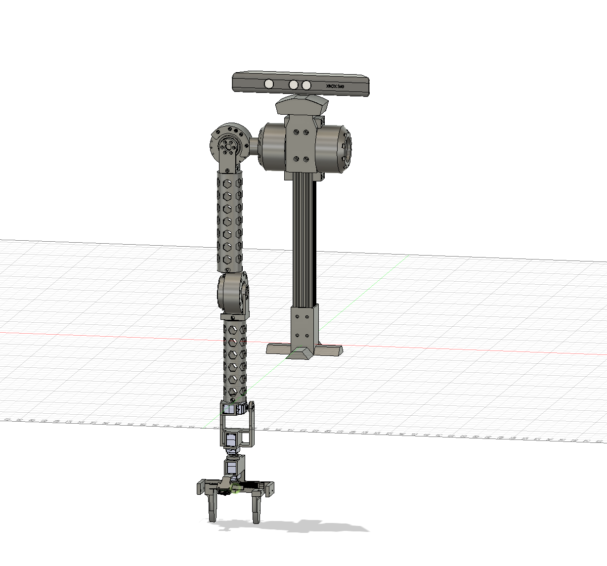
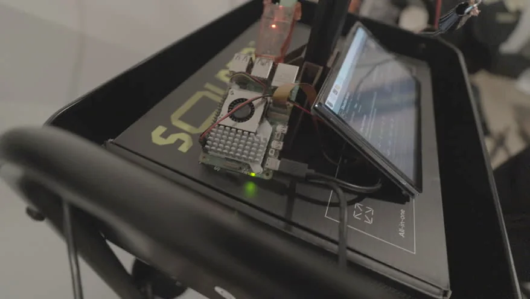
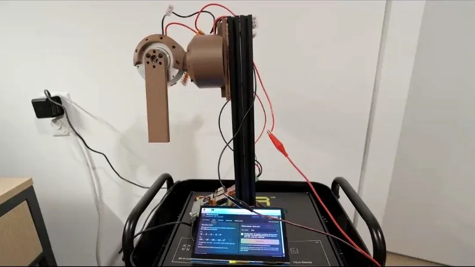
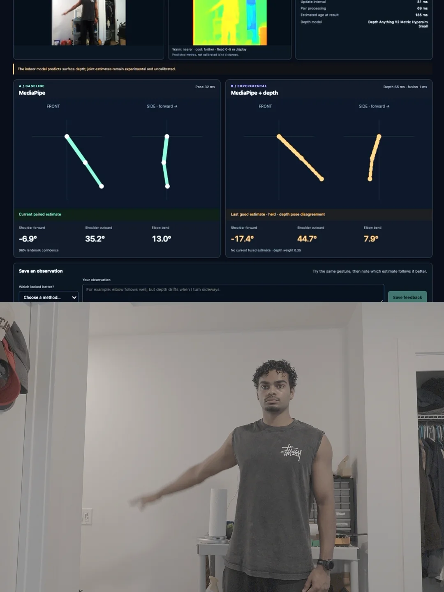
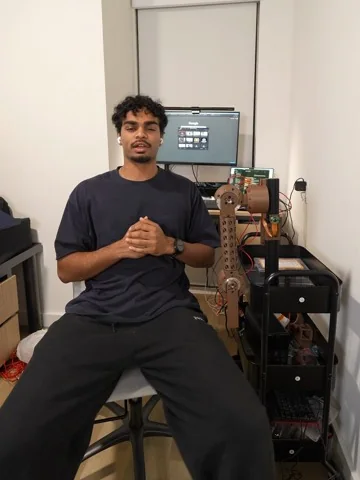
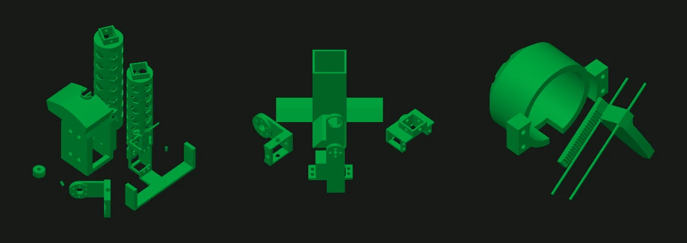

Build in progress 2026
Humanoid
Robot
One arm at a time.
I’m building a stationary upper-body robot that can eventually mirror my movements. The bench prototype can hit a commanded pose. The redesigned right arm has five degrees of freedom and a separately powered gripper for its first pick-and-place task.

- Mechanism
- 5 arm axes + powered gripper
- Control
- Raspberry Pi 5 + CAN bus
- First task
- Block-to-tray transfer
01 / Hardware in motion
From a test rig to a working pose.
What I built
From three axes to five.
Three RobStride 02 actuators drive two shoulder axes and the elbow. The Raspberry Pi commands those joints over a shared CAN bus and reads back their encoder positions. That’s the setup in the bench footage, where I got the arm to dab on command.
In the redesign, two 25 kg-class servos add two wrist axes. Together with the shoulder and elbow, those give the arm five degrees of freedom to position and orient the gripper. A third servo opens and closes the rack-and-pinion gripper independently.

02 / Build videos
A closer look at the build.
Three short videos from the bench, the camera test, and the control stack.

01 / Bench build
The first test rig
Early printed parts, the actuator stand, and the first movements.
Watch on YouTube
02 / Computer vision
Can the robot see my arm?
Comparing MediaPipe with depth-assisted tracking on the same camera feed.
Watch on YouTube
03 / Motor control
How the arm knows where to move
I explain CAN communication with the real arm and a game of telephone.
Watch on YouTube03 / Next on the bench
Pick up a block. Put it in a tray.
One repeatable task will give me a way to test the mechanics, controls, and sensing on the same setup.
